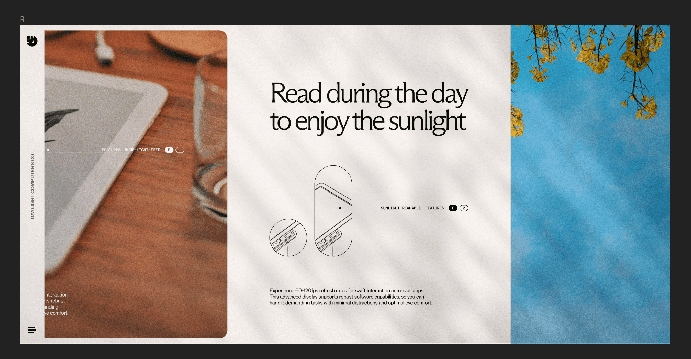
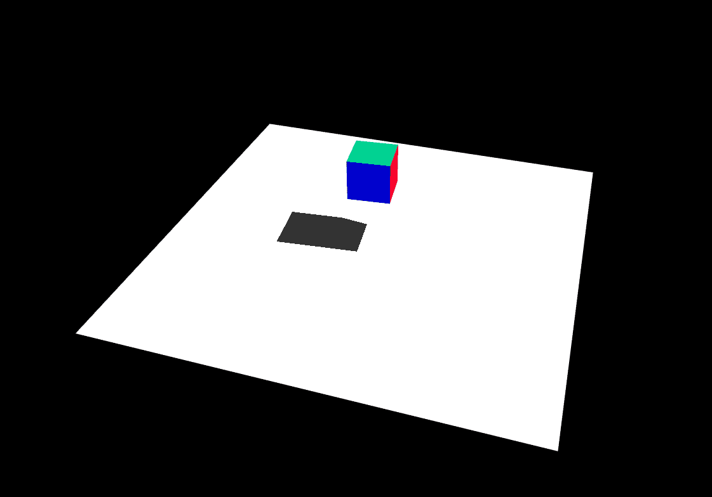
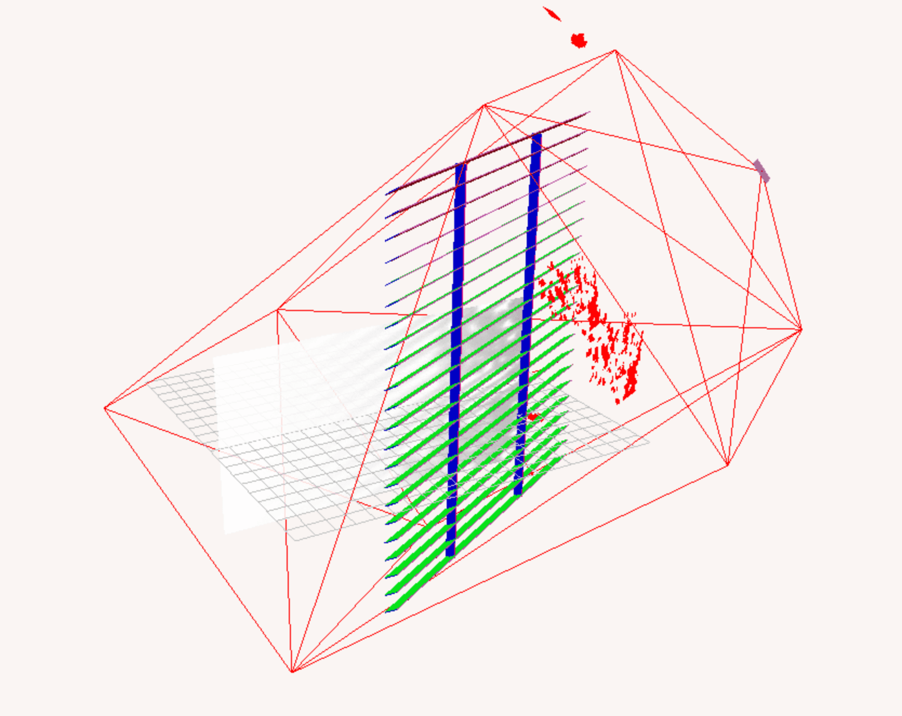
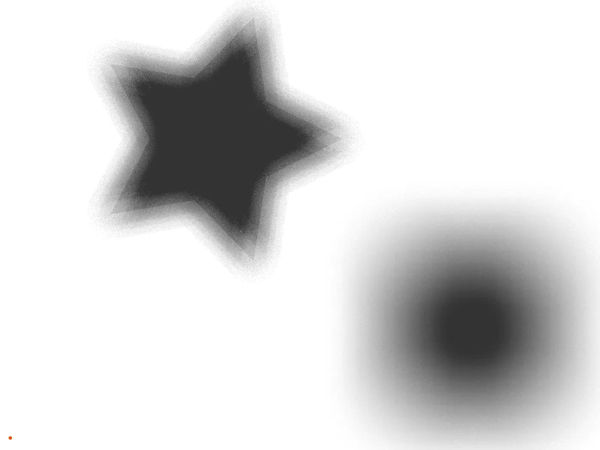
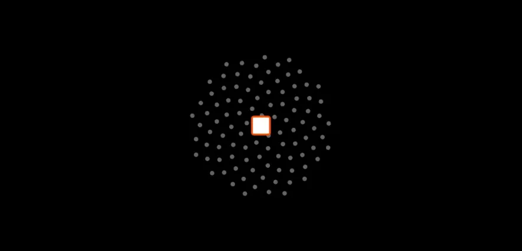
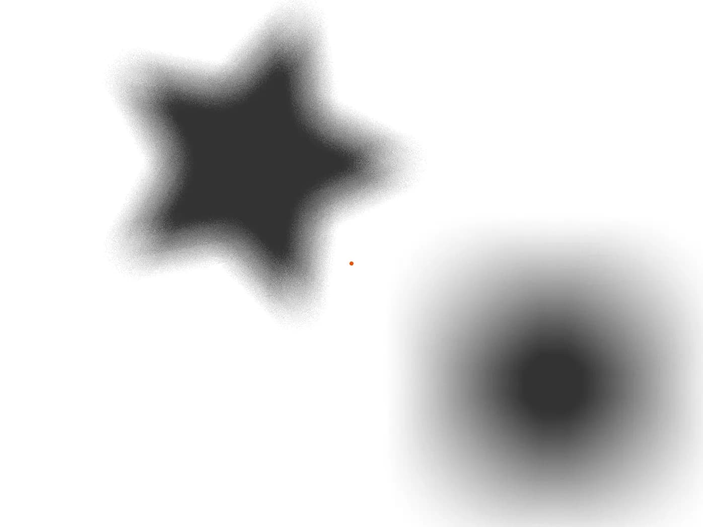
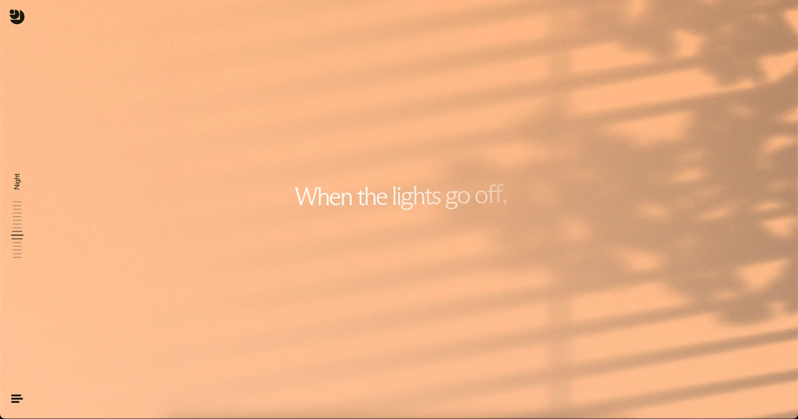

Ever wondered how we created those lifelike shadows on Daylight's website? Here we break down the secrets of our shadow rendering process.
Alright, let's dive in! Our latest project for Daylight is live, and it's not just another website—it's our bread and butter. We aimed to create something that feels cozy, calm, and natural. From shaders to optimization, we’ve got it all. And if you’re curious, you can peek behind the curtain by visiting the debug view at Daylight Computer Debug. Once there, press “o” to enter the Orbit Camera.
Okay, there is a lot to unpack here. Be patient. We'll do three posts to shed light on the tricks we used. We know you want everything at once, but good things take time, right? The topic of the day: Rendering soft shadows.
Why
Early in the project, we aimed to make a calm, warm, and natural site. We experimented with different approaches to achieve that, but the aha moment came when one of the designers created this draft:

Image showing the shadows idea
The images and background interacting with the shadow created the illusion that the image “was there,” like we saw a wall with pictures. It made perfect sense since the whole idea of the product is for you to read using natural light.
OGL
Since we only wanted to add soft shadows, we chose OGL as our WebGL library. Why? Because It’s lightweight and easy to use, and honestly, we just wanted to try it. To integrate it with React, we added pmndrs/react-ogl. The API is similar to react-three-fiber, so adopting it was simple for us. However, because it is minimalistic, creating advanced effects requires a bit more effort. The upside is that this gives us complete artistic control.
Soft shadows algorithm
Currently, OGL does not implement soft shadows, so we had to create our own. During this process, we learned several useful techniques that we would like to share. We began by adding a cube that casts a shadow, which can be done by following the shadow-maps example on the OGL website.

Cube shadow
Then, we started testing how to blur the shadows. At first, we edited the shader and added a Gaussian blur, which created the illusion that the objects were far away.
The effect started to look good, but something was off; real shadows don’t behave that way. In real life, the farther an object is from the surface, the more blurred its shadow appears. Here's a reference image of a real wall with shadows to illustrate this concept:
To achieve this effect, our shader first needs to know the object's distance from the wall. This is easily done since we can access the distance information during rendering. The darker the pixel, the closer it is to the wall, and that pixel should have less blur. Here is an example of what the light’s camera from the daylight “sees”:
image showing shadows
Here is the same light camera viewed from outside:

image viewed from outside:
Calculating soft shadows
To simplify the problem, we created this sandbox to play with. The background on the sandbox is a depth map similar to the one above. On this depth map, we have two shapes. A star and a square. The star is closer to the wall than the square, producing a darker color. We added a small stroke to the shapes to make them easy to distinguish:
If we were using a program like Figma or Photoshop, we would blur each object separately. But that’s not something we can do here. On a shader, we have to calculate every blurred shadow simultaneously.
Note
Remember, each operation deceived will run for every pixel.
So, how can we solve this problem? One way is to search in areas close to our pixel to see if there is an object that causes a shadow. Let's sample a grid around our pixel to search for objects:
Hint: Click anywhere on the canvas to see how the shader works on that pixel.
Here is the fragment shader used to sample the texture:
precision mediump float;
uniform sampler2D uTexture;
uniform float wSize;
varying vec2 vTexCoord;
const int gridSize = 15;
const int gridDivisions = 4;
void main() {
vec2 uv = vTexCoord;
uv.y = 1.0 - uv.y;
int shadowCounter = 0;
for (int i = -gridDivisions; i <= gridDivisions; i++) {
for (int j = -gridDivisions; j <= gridDivisions; j++) {
vec2 offset = vec2(i * gridSize, j * gridSize);
vec4 color = texture2D(uTexture, uv + offset / wSize);
if (color.r > 0.0 && color.g == 1.) {
shadowCounter++;
}
}
}
float shadowFactor = float(shadowCounter) / float((gridDivisions * 2 + 1) * (gridDivisions * 2 + 1));
vec3 color = vec3(1. - shadowFactor);
gl_FragColor = vec4(color, 1.0);
}In this example, we sample a grid of points around our pixel and evaluate whether the point intersects with an object; if it does, it will “add a shadow”.
We can distinguish our first issue: the produced shadow is pixelated. Let’s add a random rotation to the grid, this will help smooth our result:
Note
To simplify the visualization, the grid will not rotate on the debug view, but it is rotating on the shader.
precision mediump float;
uniform sampler2D uTexture;
uniform float wSize;
uniform float hSize;
varying vec2 vTexCoord;
const int gridSize = 15;
const int gridDivisions = 4;
vec3 random3(vec3 c) {
float j = 4096.0 * sin(dot(c, vec3(17.0, 59.4, 15.0)));
vec3 r;
r.z = fract(512.0 * j);
j *= .125;
r.x = fract(512.0 * j);
j *= .125;
r.y = fract(512.0 * j);
return r - 0.5;
}
float getNoise(vec2 uv, float screenWidth) {
vec2 scaledUV = uv * screenWidth;
vec3 seed = vec3(scaledUV, mod(scaledUV.x + scaledUV.y, screenWidth));
vec3 noise = random3(seed);
return noise.x * 0.3 + noise.y * 0.3 + noise.z * 0.4;
}
void main() {
vec2 uv = vTexCoord;
uv.y = 1.0 - uv.y;
float noiseSample = getNoise(uv, wSize);
float angle = noiseSample * 3.14159265;
float cosAngle = cos(angle);
float sinAngle = sin(angle);
int shadowCounter = 0;
for (int i = -gridDivisions; i <= gridDivisions; i++) {
for (int j = -gridDivisions; j <= gridDivisions; j++) {
vec2 offset = vec2(i * gridSize, j * gridSize);
vec2 rotatedOffset;
rotatedOffset.x = cosAngle * offset.x - sinAngle * offset.y;
rotatedOffset.y = sinAngle * offset.x + cosAngle * offset.y;
vec4 color = texture2D(uTexture, uv + rotatedOffset / vec2(wSize, hSize));
if (color.r > 0.0 && color.g == 1.) {
shadowCounter++;
}
}
}
float shadowFactor = float(shadowCounter) / float((gridDivisions * 2 + 1) * (gridDivisions * 2 + 1));
vec3 color = vec3(1. - shadowFactor);
gl_FragColor = vec4(color, 1.0);
}This works; we could call it a day, but every shadow has the same size! In real life, objects near the wall should produce a smaller shadow. To figure out which points create shadows that affect our pixel, we must consider the size of the shadow.
Let's illustrate this by drawing a circle to represent the size of the shadow produced by each point.
Each circle represents the radius of the shadow produced by that point in space. The radius was calculated by sampling the depth map at that point. Because the square is further away, its shadow will cover a larger area. A green circle means that, for that given sample, a surface contributes a shadow to our pixel.
Remember, we are debugging just one pixel at a time, this process has to be done for each pixel on your screen. On our designer's 2k monitor, that’s about 2442240 pixels, and he also has 30 other design tools opened, so we better optimize this thing.
Also, there is another problem that you might have noticed by now: the shadows look “blocky.” This is mainly because we are using a square grid to sample our depth map.

So, how can we solve this problem? When searching for the answer, we remembered this awesome library called pmndrs/drei, a collection of useful helpers for react-three-fiber. We couldn’t use the library (we are using OGL), but thankfully, it’s open source, so we get to see how they implemented it. They used something called vogelDisk to sample the depth shader.
Vogel disk sampling
The Vogel Disk algorithm is a method for distributing points evenly within a circular area, using the golden angle to achieve uniform spacing. This approach significantly enhances sampling by reducing clustering and gaps compared to grid-based methods, leading to improved sampling quality, reduced aliasing artifacts, and more natural, visually appealing results.

Here is how we implemented the Vogel Disk Sampling:
precision highp float;
uniform sampler2D uTexture;
uniform highp float wSize;
uniform highp float hSize;
varying vec2 vTexCoord;
const float pi = 3.1415926535897932384626433832795;
const float goldenAngle = pi * (3.0 - sqrt(5.0)); // Golden angle in radians
const float diskSize = 80.0;
const int diskSamples = 100;
const float minSize = 20.;
const float maxSize = 300.;
vec3 rand(vec2 uv) {
return vec3(
fract(sin(dot(uv, vec2(12.75613, 38.12123))) * 13234.76575),
fract(sin(dot(uv, vec2(19.45531, 58.46547))) * 43678.23431),
fract(sin(dot(uv, vec2(23.67817, 78.23121))) * 93567.23423)
);
}
void main() {
vec2 uv = vTexCoord;
uv.y = 1.0 - uv.y;
int shadowCounter = 0;
float shadowInfluence = 0.0;
float noiseSample = rand(uv).x;
float angle = noiseSample * pi;
float cosAngle = cos(angle);
float sinAngle = sin(angle);
for (int i = 1; i <= diskSamples; i++) {
float r = diskSize * sqrt(float(i) / float(diskSamples));
float theta = float(i) * goldenAngle;
vec2 offset;
offset.x = r * cos(theta);
offset.y = r * sin(theta);
vec2 rotatedOffset;
rotatedOffset.x = cosAngle * offset.x - sinAngle * offset.y;
rotatedOffset.y = sinAngle * offset.x + cosAngle * offset.y;
vec4 color = texture2D(uTexture, uv + rotatedOffset / vec2(wSize, hSize));
if (color.r > 0.0 && color.g == 1.0) {
float dist = length(offset);
float size = color.r;
size = (size * (maxSize - minSize)) + minSize;
if (size / 2.0 >= dist) {
shadowInfluence += mix(8.0, 0.5, size / maxSize);
shadowCounter++;
}
}
}
float shadowFactor = shadowInfluence / float(diskSamples);
shadowFactor = clamp(shadowFactor, 0.0, 0.8);
vec3 color = vec3(1.0 - shadowFactor);
gl_FragColor = vec4(color, 1.0);
}Here is the debug version for it:
As we can see in the final render, the star has no hard edges, and the square shadows seem much smoother. The best part? It uses fewer samples than the grid approach.

Here is the same technique working on the Daylight site.

Final Thoughts
Being involved in the design process from the very beginning was a key part of achieving a great result, as it allowed us to understand how the site should feel. We focused our technical efforts on making the experience feel "calm and natural," which is why we chose to develop the soft shadows effect.
This discussion is just the beginning. Stay tuned for the next two articles where we will dive deeper into using Canvas for rendering and advanced debugging techniques to optimize performance and visual fidelity. These upcoming articles will provide further insights and tools to enhance your graphical projects. Keep posted!